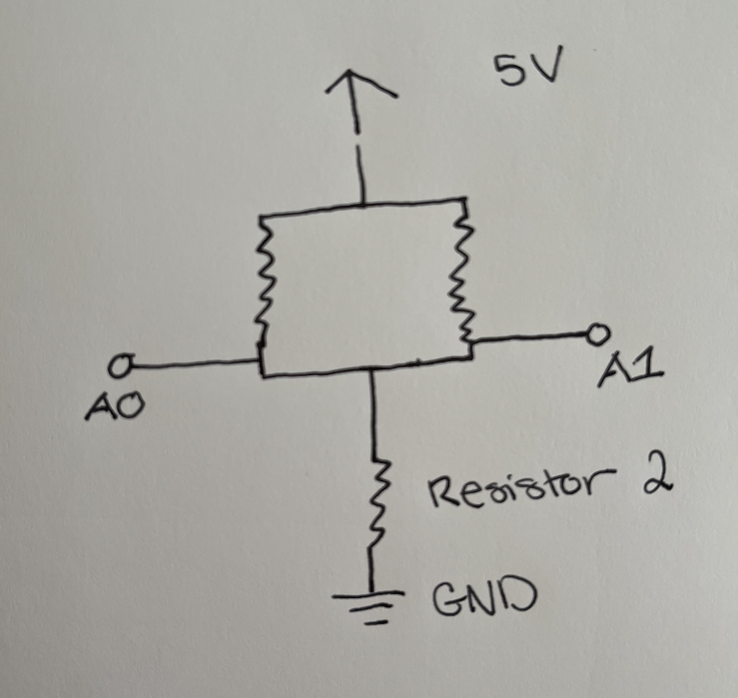

Here are my drawings of the schematic for this circuit. I used a red LED which was connected to pin 9 and a 220 ohm
resistor. I also used a Joystick which was connected to both the analog input A0 pin for the x values, and the analog input A1
pin for the y values.

Here is my calculation for the resistor for this circuit.
The Arduino output voltage is 5V and the red LED has a voltage drop of 1.8V. The desired current for
the LED is 20mA or .02A. Based on my calculation of a 160 ohms I used a 220 ohm resistor to ensure
that the current in the LED wouldn't exceed 20mA. The joystick has 2 potentiometers inside of it which
form the voltage divider so I didnt need to add another external resistor on the circuit board. The joystick
voltage divider should have between 5V and 0V depending on the position and the resistance. The resting middle position
should result in 2.5V.

Here is my circuit I made. I chose to use a red LED as my output and the joystick as the two inputs. I connected the LED to pin 9 and the
joystick to pin 2 on my Arduino. The x values are of my joystick are connected and read through the A0 analog input pin, and the
y values are being read through the A1 analog input pin.
Here is the code snipit from the Arduino code that I wrote for the circuit. I connected the red led to pin 9 on the Arduino.
The x values from the joystick are being read through analog pin A0, and the y values from the joystick are being read through
analog pin A1. The led is initially set to off and then is turned on and off based readings from the serial port. The x and y values
from the joystick read through the analog pins have values between 0 and 1023 because the Arduino is a 10-bit converter and can therfore
read 1024 different voltage values that the joystick generates. These values are printed to the serial port.
// Creating constants for pins.
const int red = 9; // pin that the LED is attached to
const int x = A0; // Analog input pin for the x value
const int y = A1; // Analog input pin for the y value
// Creating variables for reading and outputting x and y values
int xval = 0; // Variable for reading x values
int yval = 0; // Variable for reading y values
void setup() {
// initialize serial communications at 9600 bps:
Serial.begin(9600);
pinMode(red, OUTPUT); // set led pin to output
digitalWrite(red, LOW); // turn led off
}
void loop() {
// read the analog input values:
xval = analogRead(x); // read analog input x value
yval = analogRead(y); // read analog input y value
// print x and y values to the serial port on one line seperated by a comma
Serial.print(xval);
Serial.print(",");
Serial.println(yval);
// determines if commands have been sent to the serial port
if (Serial.available() > 0) {
String ledInstruction = Serial.readStringUntil("\n"); // reads first line of serial port
ledInstruction.trim(); // trims excess whitespace
// turns on LED if command from serial port reads LED_ON
if (ledInstruction == "LED_ON") {
digitalWrite(red, HIGH);
}
else if (ledInstruction == "LED_OFF") { // turns off LED if command from serial port reads LED_OFF
digitalWrite(red, LOW);
}
}
// wait 20 milliseconds before the next loop for the analog-to-digital
// converter to settle after the last reading
delay(20);
}
Here is the code that I wrote for the p5.js to control the p5 page. The draw function reads in x and y values
from the serial port. These values are between 0 and 1023 which corresponds to the position of the joystick. These values are
mapped to values between 50 and 500 which correspond to postions on the webpage to allow the 100x100 circle to move around the
webpage without going outside the edges of the view. The key pressed and key released functions determine if the space bar
has been pressed and then sends messsages to the serial port to turn the led on or off.
const BAUD_RATE = 9600; // sets baud rate to match arduino baud rate
let port, connectBtn; // Declares global variables
function setup() {
setupSerial(); // Runs the serial setup function
// Create a canvas that is the size of the browser window.
createCanvas(windowWidth, windowHeight);
background(255,0,80); // sets background color to red
// sets text settings
textFont("system-ui", 50);
textStyle(BOLD);
textAlign(CENTER, CENTER);
}
function draw() {
const portIsOpen = checkPort(); // Check whether the port is open
if (!portIsOpen) return; // If the port is not open, exit the draw loop
background(255,0,80); // sets background color to red
let str = port.readUntil("\n"); // Read from the port until the newline
if (str.length == 0) return; // If it didn't read anything, return.
let [x, y] = str.trim().split(","); // seperate x and y values at the comma and trim whitespace
let xval = map(Number(x), 0, 1023, 50, 500); // set x position on the screen based on x values from joystick
let yval = map(Number(y), 0, 1023, 50, 500); // set y position on the screen based on y values from joystick
ellipse(xval, yval, 100, 100); // create circle on the webpage based on the x and y positions
}
// if the space key is pressed, writes LED_ON to the serial port
function keyPressed() {
if (key === " ") {
port.write("LED_ON\n");
}
}
// if the space key is released, writes LED_OFF to the serial port
function keyReleased() {
if (key == " ") {
port.write("LED_OFF\n");
}
}
// Three helper functions for managing the serial connection.
function setupSerial() {
port = createSerial();
// Check to see if there are any ports that have used previously
let usedPorts = usedSerialPorts();
if (usedPorts.length > 0) {
// If there are ports that have been used, open the first one
port.open(usedPorts[0], BAUD_RATE);
}
// create a connect button
connectBtn = createButton("Connect to Arduino");
connectBtn.position(5, 5); // Position the button in the top left of the screen.
connectBtn.mouseClicked(onConnectButtonClicked); // When the button is clicked, run the onConnectButtonClicked function
}
function checkPort() {
if (!port.opened()) {
// If the port is not open, change button text
connectBtn.html("Connect to Arduino");
// Set background to gray
background("gray");
return false;
} else {
// Otherwise we are connected
connectBtn.html("Disconnect");
return true;
}
}
function onConnectButtonClicked() {
// When the connect button is clicked
if (!port.opened()) {
// If the port is not opened, we open it
port.open(BAUD_RATE);
} else {
// Otherwise, we close it!
port.close();
}
}